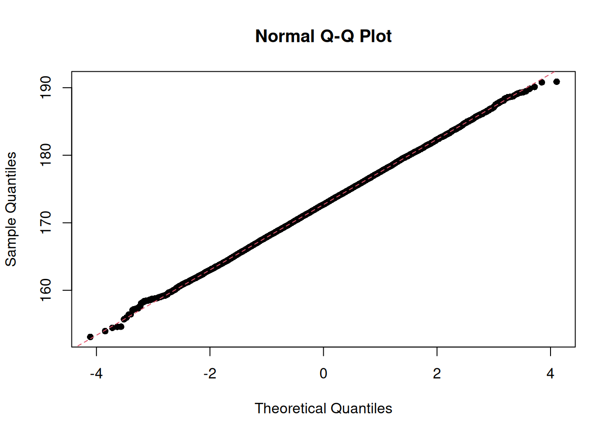

Learn statistics
Dave Tang
2024-03-30
Last updated: 2024-03-30
Checks: 7 0
Knit directory: bioinformatics_tips/
This reproducible R Markdown analysis was created with workflowr (version 1.7.1). The Checks tab describes the reproducibility checks that were applied when the results were created. The Past versions tab lists the development history.
Great! Since the R Markdown file has been committed to the Git repository, you know the exact version of the code that produced these results.
Great job! The global environment was empty. Objects defined in the global environment can affect the analysis in your R Markdown file in unknown ways. For reproduciblity it’s best to always run the code in an empty environment.
The command set.seed(20200503) was run prior to running
the code in the R Markdown file. Setting a seed ensures that any results
that rely on randomness, e.g. subsampling or permutations, are
reproducible.
Great job! Recording the operating system, R version, and package versions is critical for reproducibility.
Nice! There were no cached chunks for this analysis, so you can be confident that you successfully produced the results during this run.
Great job! Using relative paths to the files within your workflowr project makes it easier to run your code on other machines.
Great! You are using Git for version control. Tracking code development and connecting the code version to the results is critical for reproducibility.
The results in this page were generated with repository version 60d8e9c. See the Past versions tab to see a history of the changes made to the R Markdown and HTML files.
Note that you need to be careful to ensure that all relevant files for
the analysis have been committed to Git prior to generating the results
(you can use wflow_publish or
wflow_git_commit). workflowr only checks the R Markdown
file, but you know if there are other scripts or data files that it
depends on. Below is the status of the Git repository when the results
were generated:
Ignored files:
Ignored: .Rproj.user/
Note that any generated files, e.g. HTML, png, CSS, etc., are not included in this status report because it is ok for generated content to have uncommitted changes.
These are the previous versions of the repository in which changes were
made to the R Markdown (analysis/stats.Rmd) and HTML
(docs/stats.html) files. If you’ve configured a remote Git
repository (see ?wflow_git_remote), click on the hyperlinks
in the table below to view the files as they were in that past version.
| File | Version | Author | Date | Message |
|---|---|---|---|---|
| Rmd | 60d8e9c | Dave Tang | 2024-03-30 | t-test |
| html | 870424f | Dave Tang | 2024-03-28 | Build site. |
| Rmd | 601941c | Dave Tang | 2024-03-28 | Variance of a sample versus variance of means |
| html | 5d868bf | Dave Tang | 2024-03-27 | Build site. |
| Rmd | 27510ee | Dave Tang | 2024-03-27 | Comparing means |
| html | e155003 | Dave Tang | 2024-03-19 | Build site. |
| Rmd | 2c2bd87 | Dave Tang | 2024-03-19 | Median Absolute Deviation |
| html | 9f1076f | Dave Tang | 2024-03-19 | Build site. |
| Rmd | 35d9b85 | Dave Tang | 2024-03-19 | Type 1 and Type 2 errors |
| html | 17d7f70 | Dave Tang | 2024-03-19 | Build site. |
| Rmd | 3fe5251 | Dave Tang | 2024-03-19 | Data transformation |
| html | d232abb | Dave Tang | 2024-03-18 | Build site. |
| Rmd | 0001a3a | Dave Tang | 2024-03-18 | Address ggplot2 warnings |
| html | 3a5bc7f | Dave Tang | 2024-03-18 | Build site. |
| Rmd | 5ed2a80 | Dave Tang | 2024-03-18 | Include ToC |
| html | 02c4da1 | Dave Tang | 2024-03-18 | Build site. |
| Rmd | 6a40a22 | Dave Tang | 2024-03-18 | The normal distribution |
| html | ad4c626 | Dave Tang | 2024-03-18 | Build site. |
| Rmd | 9fc987b | Dave Tang | 2024-03-18 | Standard deviation |
| html | 52ab7ed | Dave Tang | 2024-03-18 | Build site. |
| Rmd | 2c2f5ea | Dave Tang | 2024-03-18 | Why n-1 and why squared deviations? |
| html | e8368ef | Dave Tang | 2024-03-18 | Build site. |
| Rmd | cfd0f35 | Dave Tang | 2024-03-18 | Statistics page |
Basics
Statistics are summaries or collections of numbers. The mean, median, and mode are all summary statistics. When we can’t take every single possible measurement (the population), which is often the case, we take an estimation using a sample.
Statistics uses a lot of notation (usually algebraic), which is simply a shorthand way of expressing statistical computations. Most statistical calculations simply involve addition, subtraction, multiplication, division, and exponentiation. Common calculations include the “sum of cross products” and “sum of squares”:
\[ \frac{(\sum xy)^2}{\sum x^2 + \sum y^2} = \frac{(sum\ of\ cross\ products)^2}{sum\ of\ squares\ for\ x + sum\ of\ squares\ for\ y} \]
Calculating the mean is simply:
\[ \bar{x} = \frac{\sum x}{n} \]
Variance
The mean as a summary statistic is useful but it does not provide any information on the variance. For example, the two datasets below have the same mean but as you can see have different variances.
x1 <- c(48, 49, 49, 47, 48, 47)
x2 <- c(12, 62, 3, 50, 93, 68)
mean(x1) == mean(x2)[1] TRUEThe easiest (but least useful) way to summarise variation is by using the range; it’s not that useful because it uses just two values (the lowest and highest values) from the total dataset.
range(x1)[1] 47 49range(x2)[1] 3 93To make the best use of the datasets, we need a statistic that uses all the numbers. One key piece of intuition is to realise that if all numbers are identical, there would be no variation and the numbers would all equal the mean.
x3 <- rep(48, 6)
mean(x3)[1] 48Therefore, if the numbers are not the same, each number’s contribution to the total variation is its deviation (difference) from the mean. We could add all these differences (ignoring whether the difference is + or -) and come up with a “total deviation”: \(\sum(x - \bar{x})\).
sum(abs(x1 - mean(x1)))[1] 4sum(abs(x2 - mean(x2)))[1] 162However the main problem with this method is that we can only compare total deviations between datasets with the same number. We need a deviation statistic that is independent of sample size, in the same way the mean is.
We can divide the total deviation by the total number of numbers to get the mean (average) deviation:
\[ \frac{\sum(x - \bar{x})}{n} = \frac{The\ sum\ of\ all\ the\ deviations\ from\ the\ mean}{The\ number\ of\ numbers} \]
sum(abs(x1 - mean(x1))) / length(x1)[1] 0.6666667sum(abs(x2 - mean(x2))) / length(x2)[1] 27The mean average deviation is very close to the standard measure of variation used in statistics, which is the variance.
\[ variance = \frac{\sum(x - \bar{x})^2}{n - 1} = \frac{The\ sum\ of\ all\ the\ squared\ deviations\ from\ the\ mean}{One\ less\ than\ the\ number\ of\ numbers} \]
var(x1)[1] 0.8var(x2)[1] 1189.2The bottom part of the variance equation is known as the degrees of freedom (d.f.) and the top part, \(\sum(x - \bar{x})^2\) is known as the sum of squares but should really be called the sum of squares of deviations since that is what we are calculating.
It is essential to remember that:
- Sum of squares in statistics is the technical term for summed squared deviations from the mean.
Median Absolute Deviation
The median absolute deviation is a measure of statistical dispersion. Moreover, the MAD is a robust statistic, being more resilient to outliers in a data set than the standard deviation. In the standard deviation, the distances from the mean are squared, so large deviations are weighted more heavily, and thus outliers can heavily influence it. In the MAD, the deviations of a small number of outliers are irrelevant.
Because the MAD is a more robust estimator of scale than the sample variance or standard deviation, it works better with distributions without a mean or variance, such as the Cauchy distribution.
The mad function description:
Compute the median absolute deviation, i.e., the (lo-/hi-) median of the absolute deviations from the median, and (by default) adjust by a factor for asymptotically normal consistency.
No variance.
mad(rep(1, 10))[1] 0Single outlier.
one_outlier <- c(rep(1, 9), 100)
one_outlier [1] 1 1 1 1 1 1 1 1 1 100mad(one_outlier)[1] 0Same median.
four_outlier <- c(rep(1, 6), rep(100, 4))
four_outlier [1] 1 1 1 1 1 1 100 100 100 100mad(four_outlier)[1] 0Cauchy Distribution.
set.seed(1984)
x <- rcauchy(n = 1000, location = 1, scale = 2)
hist(x, breaks = 10)
abline(v = mean(x), col = 2, lty = 2)
| Version | Author | Date |
|---|---|---|
| e155003 | Dave Tang | 2024-03-19 |
Mean and median.
mean(x)[1] 2.151276median(x)[1] 1.063466SD and MAD.
sd(x)[1] 40.77717mad(x)[1] 3.006772Why n - 1?
The two important basics of degrees of freedom are:
- We are calculating statistics from just a small sample rather than the entire population of numbers and
- The mean that is used as the basis for the deviations that contribute to the sum of squares is based on the total of just that small sample.
In ignorance of the true mean of the population, we are forced into using the total of our sample to calculate a mean from which the deviations are then calculated. It is that use of the total which restricts our freedom from \(n\) to \(n - 1\). If we used the true mean of the population and not the mean of the sample in calculating the sum of squares, we would divide by \(n\) instead.
As an analogy imagine a bookshelf and that we are trying to work out the mean thickness of all the books. We take a small sample of six books. and their combined thickness is 158 mm giving a mean of 26.3 mm. We need to know the individual deviation from the mean for each of the six books to calculate the variance.
We measure the thickness of one book (1 d.f.) and it is 22mm. The remaining five books must total \(158 - 22 = 136mm\) in thickness. We measure one more book (2 d.f.) and it is 24 mm thick. By the time, we measured the fifth book (fifth degree of freedom), the combined thickness is 129 mm. There are no more degrees of freedom for the six books! We do not need to pick up and measure the last book; it must be \(158 - 129 = 29mm\). Therefore, given the mean of the sample, we know the total thickness of the six books and from this the individual thicknesses of all six books after measuring only five (hence 5 d.f. for a sample of six!).
By using the sample mean as the base from which to calculate the deviations for the sum of squares, we have lost 1 d.f. Thus variance is not the simple mean of the squared deviations, it is the squared deviation per opportunity for variation once we have been given the sample mean.
Why are the deviations squared?
You might look at your data as measured in a multidimensional space, where each subject is a dimension and each item is a vector in that space from the origin towards the items’ measurement over the full subject’s space.
Additional remark: this view of things has an additional nice flavour because it uncovers the condition, that the subjects are assumed independent of each other. This is to have the data-space Euclidean; changes in that independence-condition require then changes in the mathematics of the space: it has correlated (or “oblique”) axes.
Now the distance of one vector-arrowhead to another is just the formula for distances in the Euclidean space, the square root of squares of distances-of-coordinates (from the Pythagorean theorem):
\[ d = \sqrt{(x_1 - y_1)^2 + (x_2 - y_2)^2 + \cdots + (x_n - y_n)^2} \]
And the standard deviation is that value, normalised by the number of subjects, if the mean-vector is taken as the y-vector.
\[ s = \sqrt{\frac{(x_1 - \bar{x})^2 + (x_2 - \bar{x})^2 + \cdots + (x_n - \bar{x})^2}{n}} \]
The standard deviation
Standard deviation is the square root of variance.
sd(x1) == sqrt(var(x1))[1] TRUEsd(x2)[1] 34.48478In the case of x2 the mean and standard deviation is
\(48.0 \pm 34.5\), which suggests
variation between \(48.0-34.5=13.5\)
and \(48.0+34.5=82.5\).
The standard deviation was once called root mean square deviation. This was a helpful name as it reminds us of the calculation in reverse (deviation, square, mean, root), where mean is \(n -1\).
\[ s = \sqrt{\frac{\sum (x - \bar{x})^2}{n - 1}} \]
The normal distribution
The word distribution is short for frequency distribution, i.e., the frequency with which different numbers are found in a population. The normal distribution is a particular pattern of variation of numbers around the mean. It is symmetrical with the frequency of individual numbers falling off equally away from the mean in both directions.
One argument (and demonstration) for why normal distributions are so common:
because many variables in the real world are the sum of other independent variables. And, when independent variables are added together, their sum converges to a normal distribution.
Read in example dataset containing the height (inches) and weights (pounds) of 25,000 different humans of 18 years of age (that are converted back to cms and kgs).
readr::read_csv(
file = "data/SOCR-HeightWeight.csv.gz",
show_col_types = FALSE,
col_names = c('index', 'height', 'weight'),
skip = 1
) |>
dplyr::mutate(height = height * 2.54) |>
dplyr::mutate(weight = weight / 2.205) -> socr
tail(socr)# A tibble: 6 × 3
index height weight
<dbl> <dbl> <dbl>
1 24995 171. 57.9
2 24996 177. 53.5
3 24997 164. 54.5
4 24998 164. 53.6
5 24999 172. 60.0
6 25000 175. 56.6Plot distribution of heights.
library(ggplot2)
ggplot(socr, aes(height)) +
geom_histogram(
aes(y = after_stat(density)),
bins = 30,
colour = "#000000",
fill = "#FFFFFF"
) +
geom_density() +
geom_vline(
xintercept = mean(socr$height),
colour = "#990000",
lty = 2
) +
theme_minimal() +
ggtitle("Distribution of heights in 25,000 18 year olds") +
NULL
| Version | Author | Date |
|---|---|---|
| 02c4da1 | Dave Tang | 2024-03-18 |
We can see that the mean height coincides with the most frequent height and that the heights are symmetrical about the mean.
The mean and standard deviation is \(172.70 \pm 4.83\).
mean(socr$height)[1] 172.7025sd(socr$height)[1] 4.830264In a normal distribution, 68% of the data lie between the mean \(\pm\) 1 \(s\), which is what we observe in this dataset.
x <- mean(socr$height)
s <- sd(socr$height)
prop.table(table(socr$height > x - s & socr$height < x + s))
FALSE TRUE
0.31644 0.68356 95% of the data lie between the mean \(\pm\) 2 \(s\), which is true again in this dataset.
x <- mean(socr$height)
s <- sd(socr$height)
prop.table(table(socr$height > x - 2 * s & socr$height < x + 2 * s))
FALSE TRUE
0.0454 0.9546 Checking for normality
In statistics, a Q–Q plot (quantile–quantile plot) is a probability plot, a graphical method for comparing two probability distributions by plotting their quantiles against each other.
The qqnorm function produces a normal Q-Q plot (where
the x-axis contains the theoretical quantiles of a normal distribution);
the qqline function adds a line to the “theoretical” Q-Q
plot. Our height data fits the theoretical line almost perfectly.
qqnorm(socr$height, pch = 16)
qqline(socr$height, col = 2, lty = 2)
| Version | Author | Date |
|---|---|---|
| 02c4da1 | Dave Tang | 2024-03-18 |
However, biological data is typically not normally distributed but are asymmetrical. We often find data peak well to the left with a long right tail. The mean of the distribution will not coincide with the peak of the data and therefore using the normal distribution is clearly not appropriate.
Another important point is our estimate of the standard deviation, which is based on a sample of the population. If our sample size is too small, our estimate of the standard deviation can be very inaccurate and therefore our estimate of the distribution.
If a distribution is non-normal, a function such as logarithm or square root can be used to normalise the distribution; this is known as transformation.
To illustrate transformation we will use data showing the abundance of the fish species Umbra pygmaea (Eastern mudminnow) in Maryland streams, which is non-normally distributed; there are a lot of streams with a small density of mudminnows, and a few streams with lots of them. Below are 12 numbers from the mudminnow data set.
library(ggridges)
library(ggplot2)
tibble::tibble(
raw = c(38, 1, 13, 2, 13, 20, 50, 9, 28, 6, 4, 43)
) |>
dplyr::mutate(stream = dplyr::row_number()) |>
dplyr::mutate(sqrt = sqrt(raw)) |>
dplyr::mutate(log = log(raw)) |>
dplyr::mutate(reciprocal = 1/raw) |>
dplyr::mutate(arcsine = asin(sqrt(raw/max(raw)))) |>
dplyr::select(stream, dplyr::everything()) |>
tidyr::pivot_longer(-stream, names_to = 'transformation') |>
dplyr::mutate(transformation = factor(transformation, levels = c('log', 'reciprocal', 'arcsine', 'sqrt', 'raw'))) -> mudminnow
ggplot(mudminnow, aes(x = value, y = transformation, fill = transformation)) +
geom_density_ridges(alpha=0.6, stat="binline", bins=30) +
theme_ridges() +
NULL
| Version | Author | Date |
|---|---|---|
| 17d7f70 | Dave Tang | 2024-03-19 |
A square root transformation is used for data that are clumped and the variance is greater than the mean. As there is no square root for negative numbers, a constant needs to be added to each observation to make all observations positive. Note that the square root of a fraction becomes larger than the observation being transformed.
x <- 0.16
sqrt(x) > x[1] TRUEA reciprocal transformation is used when clumping of the data is very high. Since the reciprocal of \(x\) is \(\frac{1}{x}\), the transformation leads to large numbers being smaller after transformation than smaller ones: \(\frac{1}{2} \gt \frac{1}{10}\).
An arcsine transformation can be used to “stretch out” data points that range between the values 0 and 1. This type of transformation is typically used when dealing with proportions and percentages, especially where high or low percentages are involved. However, it makes little difference in the 30-70% range. In the code above, the raw counts were divided by the maximum value to create percentage-like values.
mudminnow |>
dplyr::filter(transformation == "raw") |>
dplyr::pull(value) -> x
x / max(x) [1] 0.76 0.02 0.26 0.04 0.26 0.40 1.00 0.18 0.56 0.12 0.08 0.86asin(sqrt(x / max(x))) [1] 1.0588236 0.1418971 0.5350708 0.2013579 0.5350708 0.6847192 1.5707963
[8] 0.4381490 0.8455431 0.3537416 0.2867566 1.1872993Data is transformed to make it suitable for statistical analysis and subsequent statistical comparisons.
Type 1 and Type 2 errors
- A Type 1 error leads to a false positive, i.e., we erroneously claim a difference where none exists.
- A Type 2 error is the converse, a false negative, i.e., we fail to identify a true difference.
Convicting an innocent person is a Type 1 error and acquitting a guilty one is a Type 2 error.
Comparing means
Samples from a single source will always show some background variation. When comparing means, we need some way of judging the likelihood of a difference between two means occurring just by chance from the background variation. The standard deviation can be used to assess the likelihood of a single observation being picked from the normal distribution. What metric do we use to judge the size of a difference between two means? The standard error of a difference between two means (s.e.d.m)! Note that error replaces deviation when dealing with variations of means rather than individual data.
Standard error of a difference between two means
This is one way to illustrate and calculate s.e.d.m. First we need a collection of “means”; then we’ll calculate the differences between the means; and finally we will calculate the variance of the differences, which is the standard error!
Sample 300 eggs and calculate the means of three consecutive eggs to get a collection of 100 means.
raw_eggs <- c(
rep(61, 1),
rep(62, 6),
rep(63, 10),
rep(64, 17),
rep(65, 29),
rep(66, 19),
rep(67, 11),
rep(68, 5),
rep(69, 2)
)
set.seed(1984)
eggs <- sample(x = raw_eggs, size = 300, replace = TRUE)
lapply(seq(from = 1, to = length(eggs), by = 3), function(x){
eggs[x:(x+2)]
}) |>
sapply(X = _, mean) -> egg_means
length(egg_means)[1] 100Next, calculate the differences in means between each pair of means.
sapply(seq(from = 1, to = length(egg_means), by = 2), function(x){
egg_means[x+1] - egg_means[x]
}) -> egg_diffs
egg_diffs [1] 0.3333333 2.0000000 -1.0000000 0.0000000 -0.3333333 -1.0000000
[7] -0.3333333 2.6666667 -1.0000000 0.3333333 -2.6666667 -1.6666667
[13] -0.6666667 1.0000000 0.3333333 2.0000000 2.0000000 1.6666667
[19] -2.0000000 0.6666667 1.0000000 1.0000000 -1.6666667 -1.0000000
[25] -0.6666667 0.0000000 0.6666667 -1.0000000 2.0000000 0.3333333
[31] -2.6666667 -1.3333333 -1.6666667 -1.0000000 -1.3333333 -0.6666667
[37] 1.6666667 -1.6666667 -0.3333333 1.0000000 2.0000000 1.3333333
[43] -2.3333333 1.0000000 2.0000000 -1.3333333 0.6666667 1.3333333
[49] -1.3333333 -0.6666667Finally, we can calculate the standard error!
sd(egg_diffs)[1] 1.40619But for the sake of comparison, we will use this set of differences as provided in the book.
egg_diffs <- c(0.67, 0, -0.67, -0.67, 2, 0.33, 0, 3.33, 1.33, 1.67, -0.67, -1.67, 1.67, -1.67, 1.33, 2, 1, -0.67, -1.33, 1.33, -1.33, 1, 0.67, -0.67, 1.33, 0.33, 1, 2.67, 0, -0.33, 1.67, 1.33, -2.67, 1.67, 1, -2, 0.33, 0.67, 0.33, 0.33, -2.33, 0, 0, 1, 0, -1, 1, -0.67, 0.67, 2.33)
sd(egg_diffs)[1] 1.303365Here’s the most important concept to grasp:
Just as we collect a bunch of numbers and calculate the standard deviation to assess whether a newly collected number is likely or not, we calculate the standard error of difference in means to assess whether a newly collected difference in means is likely or not!
The standard error (of difference in means) can be used to judge whether a difference between two means (based on three eggs) is a likely or unlikely difference to sample within a single batch of eggs.
Standard error calculation
The standard error can simply be calculated by using the variance in your samples and the number of samples; in the example above, this would be the variance of the three eggs, which means the number of samples is three.
This is because the variance of individual samples has a very simple relationship with the variance of means, and the variance of differences.
For this section:
- \(s\) is for the standard deviation, which is relevant to the variation among single data
- \(s^2\) is for the variance of individual data
- \(s.e.\) for standard error (the equivalent of \(s\) for means)
- \(s.e.d.m.\) for the standard error of differences between means.
Variance of a sample to variance of means
The variance of means of \(n\) numbers is the variance of the sample divided by \(n\).
Let’s demonstrate this! A set of 20 means were calculated by randomly
picking three eggs from raw_eggs and calculating their
means. We can then calculate the variance of this set of means.
egg_means <- c(63.67, 66.67, 63, 64.67, 65.33, 66.63, 64.67, 65, 65, 65.33, 64.33, 64, 64.67, 64, 64.33, 65.67, 64.67, 66.33, 65.67, 65)
var(egg_means)[1] 0.9126379Now note that the variance of the means multiplied by \(n\) is close to the variance of
raw_eggs.
var(egg_means) * 3[1] 2.737914var(raw_eggs)[1] 2.694444Therefore, we can estimate the variance of means by taking the variance of the data and dividing by the size of sample used to calculate the means. Let’s see if this relationship holds for different \(n\)’s with a larger data set.
set.seed(1984)
my_pop <- rnorm(n = 1000000, mean = 50, sd = 25)
variance_of_means <- function(n, nmeans=20, seed=1984){
set.seed(seed)
my_means <- sapply(1:nmeans, function(x){
mean(sample(x = my_pop, size = n, replace = TRUE))
})
v <- c(var(my_means), var(my_pop) / n)
names(v) <- c('var_means', 'var_est')
v
}
data.frame(
n3 = variance_of_means(3),
n10 = variance_of_means(10),
n50 = variance_of_means(50),
n100 = variance_of_means(100)
) n3 n10 n50 n100
var_means 169.1160 53.49289 10.66052 5.302893
var_est 209.1002 62.73006 12.54601 6.273006The standard error is the square root of the variance of the mean, which we can estimate from the variance of the single data.
\[ s.e. = \sqrt{\frac{s^2}{n}} = \frac{s}{\sqrt{n}} \]
t-test
Manual calculation
x <- c(75, 72, 68, 66, 65, 65, 60, 58, 50, 48, 42, 40)
y <- c(80, 76, 74, 70, 68, 68, 66, 65, 62, 58, 56, 43, 40, 39)
correction_factor <- function(x){
sum(x)^2 / length(x)
}
x_ss <- sum(x^2) - correction_factor(x)
y_ss <- sum(y^2) - correction_factor(y)
pooled_ss <- x_ss + y_ss
pooled_sd <- sqrt(pooled_ss / (length(x) + length(y) - 2))
sedm <- pooled_sd * sqrt((1/length(x) + 1/length(y)))
tstat <- (mean(x) - mean(y)) / sedm
tstat[1] -0.5509239Using t.test().
test <- t.test(x = x, y = y)
test$statistic t
-0.5564689 Visualise
eg1 <- datasets::anscombe
sessionInfo()R version 4.3.2 (2023-10-31)
Platform: x86_64-pc-linux-gnu (64-bit)
Running under: Ubuntu 22.04.3 LTS
Matrix products: default
BLAS: /usr/lib/x86_64-linux-gnu/openblas-pthread/libblas.so.3
LAPACK: /usr/lib/x86_64-linux-gnu/openblas-pthread/libopenblasp-r0.3.20.so; LAPACK version 3.10.0
locale:
[1] LC_CTYPE=en_US.UTF-8 LC_NUMERIC=C
[3] LC_TIME=en_US.UTF-8 LC_COLLATE=en_US.UTF-8
[5] LC_MONETARY=en_US.UTF-8 LC_MESSAGES=en_US.UTF-8
[7] LC_PAPER=en_US.UTF-8 LC_NAME=C
[9] LC_ADDRESS=C LC_TELEPHONE=C
[11] LC_MEASUREMENT=en_US.UTF-8 LC_IDENTIFICATION=C
time zone: Etc/UTC
tzcode source: system (glibc)
attached base packages:
[1] stats graphics grDevices utils datasets methods base
other attached packages:
[1] ggridges_0.5.6 ggplot2_3.4.4 workflowr_1.7.1
loaded via a namespace (and not attached):
[1] tidyr_1.3.0 sass_0.4.7 utf8_1.2.4 generics_0.1.3
[5] stringi_1.7.12 hms_1.1.3 digest_0.6.33 magrittr_2.0.3
[9] evaluate_0.22 grid_4.3.2 fastmap_1.1.1 rprojroot_2.0.3
[13] jsonlite_1.8.7 processx_3.8.2 whisker_0.4.1 ps_1.7.5
[17] promises_1.2.1 httr_1.4.7 purrr_1.0.2 fansi_1.0.5
[21] scales_1.2.1 jquerylib_0.1.4 cli_3.6.1 rlang_1.1.1
[25] crayon_1.5.2 munsell_0.5.0 bit64_4.0.5 withr_2.5.1
[29] cachem_1.0.8 yaml_2.3.7 tools_4.3.2 parallel_4.3.2
[33] tzdb_0.4.0 dplyr_1.1.3 colorspace_2.1-0 httpuv_1.6.12
[37] vctrs_0.6.4 R6_2.5.1 lifecycle_1.0.3 git2r_0.32.0
[41] stringr_1.5.0 fs_1.6.3 bit_4.0.5 vroom_1.6.4
[45] pkgconfig_2.0.3 callr_3.7.3 pillar_1.9.0 bslib_0.5.1
[49] later_1.3.1 gtable_0.3.4 glue_1.6.2 Rcpp_1.0.11
[53] xfun_0.40 tibble_3.2.1 tidyselect_1.2.0 rstudioapi_0.15.0
[57] knitr_1.44 farver_2.1.1 htmltools_0.5.6.1 labeling_0.4.3
[61] rmarkdown_2.25 readr_2.1.4 compiler_4.3.2 getPass_0.2-2